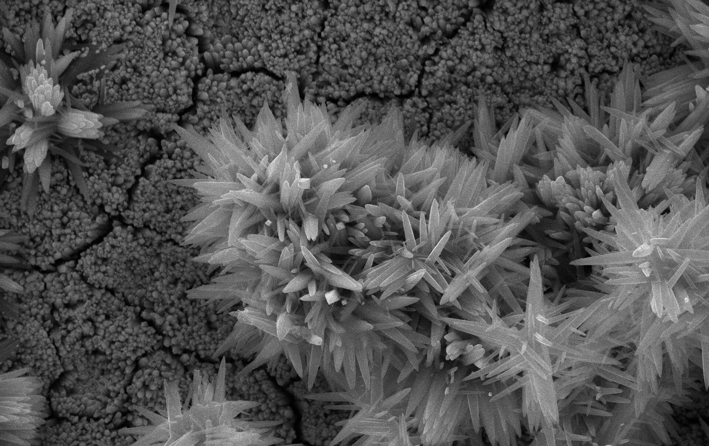
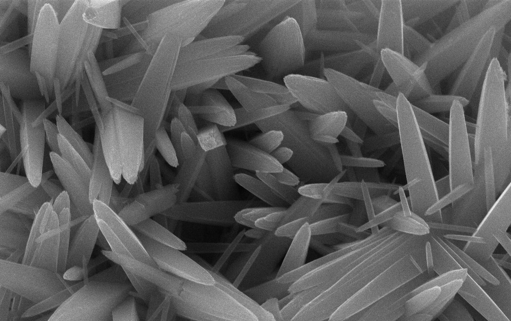
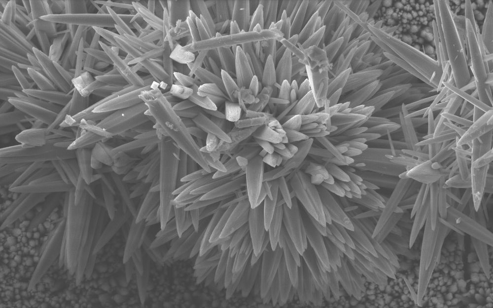
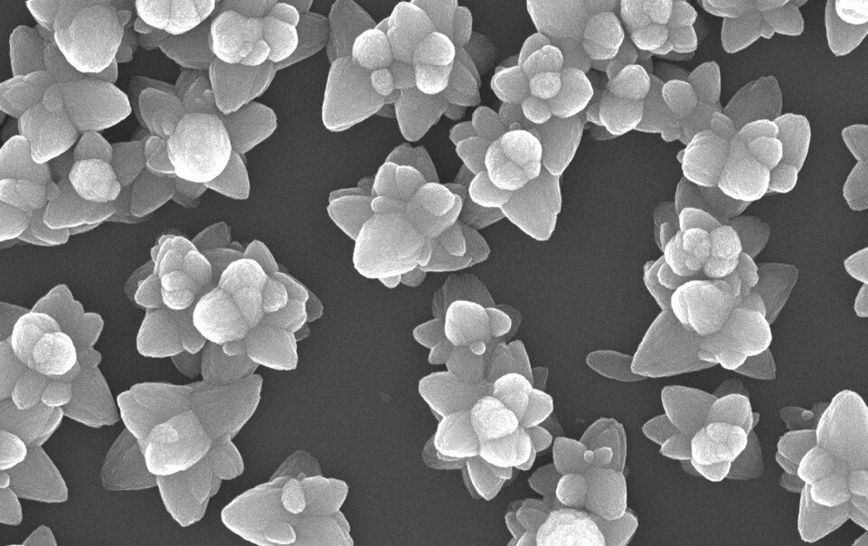

Energy
Advanced materials for sustainable energy solutions.
PhD · Materials Chemistry
I am a materials chemist with a PhD in Chemistry (Analytical) and a biotechnology background, working on the development, characterization, and customization of inorganic nanomaterials for energy, emissions, materials engineering, and wearable technology.


Research Profile
Advanced materials for sustainable energy solutions.
Innovative approaches for cleaner environments and lower emissions.
Tailored nanomaterials for advanced engineering applications.
Smart materials for next-generation wearable devices and health monitoring.

About Me
I am a materials chemist with a PhD in Chemistry (Analytical) and a biotechnology background, interested in developing and characterizing inorganic nanomaterials for real-world applications. My research focuses on creating sustainable solutions for energy, emissions, materials engineering, and wearable technology.
Chemistry (Analytical)
Biotechnology
Inorganic nanomaterials for Energy, Emissions, Materials Engineering & Wearable Technology
Selected Research
Nanomaterials / Biomedical
A wearable platform in which hafnium oxide nanoparticles support real-time tumor monitoring and sonodynamic therapy.
Nanomaterials / Bioimaging
A fluorescent molybdenum nanocluster, developed as an alternative to MoS2, for cellular bioimaging.
Materials Engineering
A solvent-free, two-step annealing route to metal oxide nanofibers used in peroxide sensing.
Nanomaterials / Luminescence
Terbium stabilized in a dual oxidation state within a hexagonal metal-oxide nanoparticle.

Publications & Research Profile
View publications, research highlights, and detailed research information.
View PublicationsLet’s Connect
Feel free to get in touch. I’d be happy to hear from you.
Get in Touch